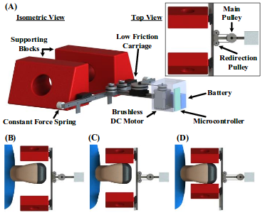
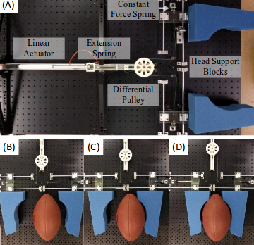
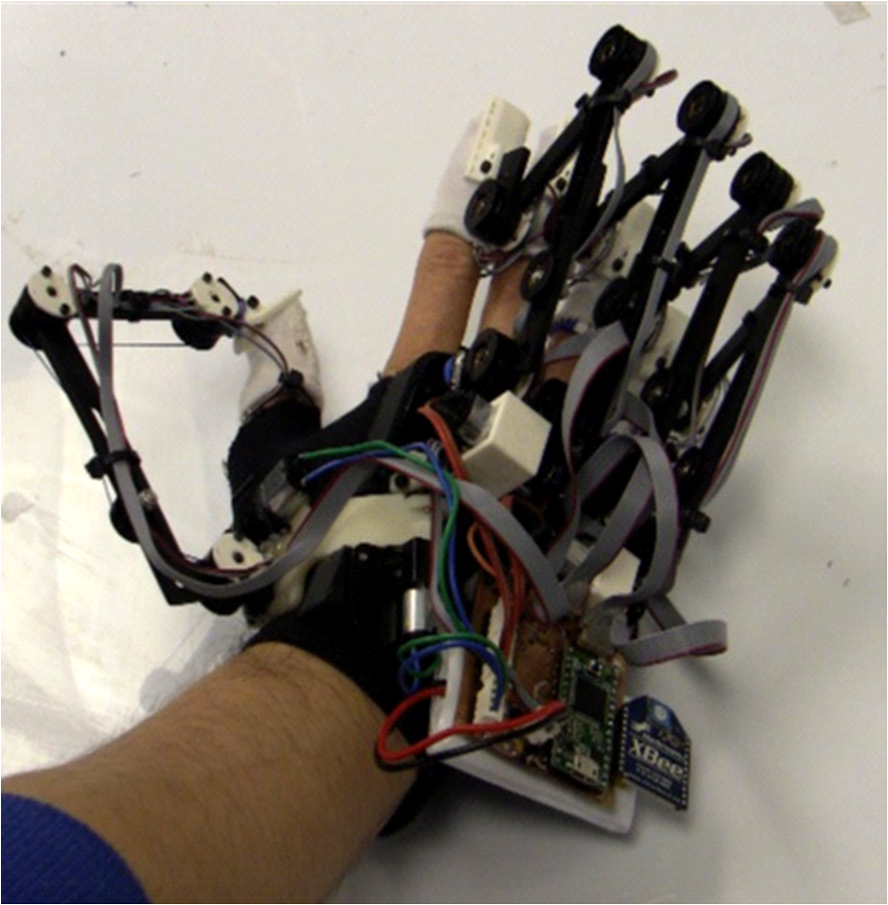
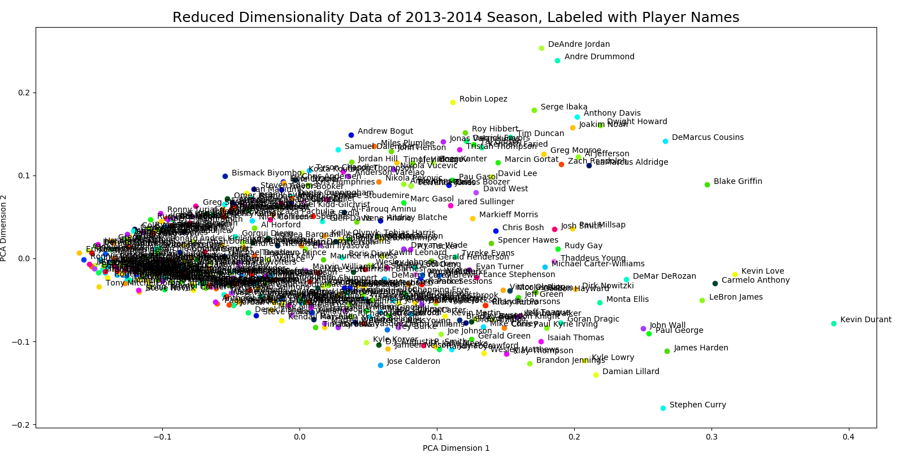
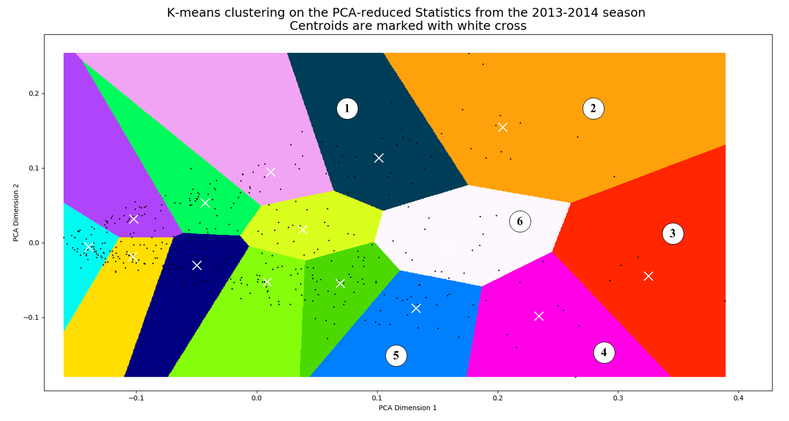
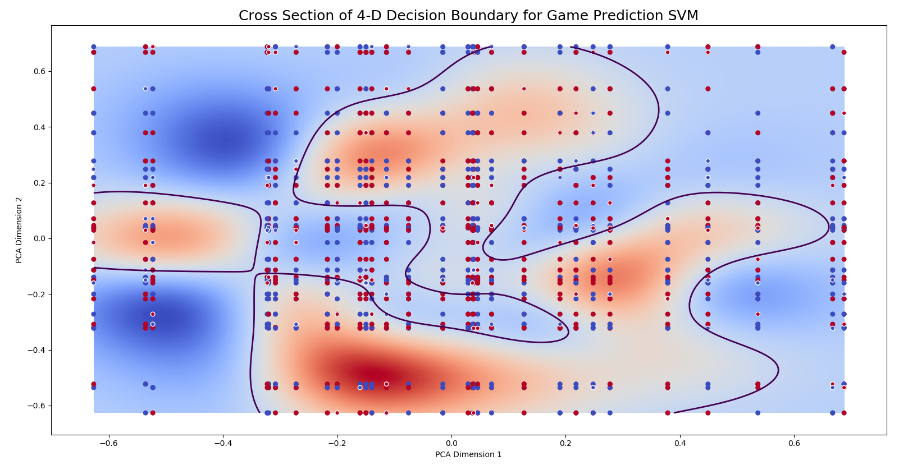

Career Profile
After working for three years as a field commissioning engineer with TMEIC, I decided to return to school to get my M.S. As a researcher at the Robotics and Mechatronics Lab at Virginia Tech, I have had the opportunity to gain valuable knowledge and experience working with robotics, mechatronics, controls, and design. I love the challenge of being faced with a difficult problem and coming up with a clever and creative engineering solution, from my field engineering days to my research experience. There is no better feeling than seeing your efforts result in a process line starting up again, or a robot strating to move. I am planning to defend my thesis this spring, and would love to continue working in robotics and mechatronics.
Experiences
As a graduate research assistant, I was responsible for conducting rigorous robotics research with the ultimate goal of publishing my work in peer-reviewed conferences and journals. This research was conducted both individually as well as in teams. Personally, I felt I was most successful working in large and small teams, as I enjoy talking through ideas because not only do team members have excellent suggestions and strategies, but also talking out an idea helps me think it through more clearly myself! Some of the main responsibilities and accomplishments during my research are below:
- Design electromechanical components and robotic mechanisms for a variety of applications, utilizing appropriate CAD software.
- Develop control programs in order to operate robotic devices, using paradigms such as PID, Impedance, Full-State Feedback, and Linear Active Disturbance Rejection controllers.
- Conduct simulations in order to validate mechanical, electrical, and software designs.
- Program microcontrollers such as MSP432, Arduino, Teensy, and Photon in order to operate mechatronic systems.
- Guide projects through rapid prototyping process, including circuit design, part machining, 3-D printing, programming, testing, and experimentation/data analysis.
- Write and prepare funding proposals and relevant documents for submission to various agencies.
My role as a field engineer was both to set up, troubleshoot, and perform application-specific tuning for medium-voltage hardware as well as to diagnose and repair problems in already installed systems. After working for my first 6 months in Level I steel mill automation, I transitioned to working on variable frequency drives (VFDs). I spent time all over the world commissioning drives for all kinds of motor control applications. While it was a high-pressure job, especially showing to a site when the manager immediately informing you the plant is losing X thousand dollars during the outage, the feeling after fixing the problem was extremely rewarding. Some of my some of my main accomplishments during my time at TMEIC are listed below:
- Led multi-disciplinary engineering and construction teams in industrial start-up projects relating to VFDs for industrial AC induction and synchronous motor control.
- As the sole technical expert and company representative on-site, coordinated information transfer, management communication, and project planning between headquarters and customer sites.
- Programmed HMI and PLCs for automation of aluminum and steel mills, including several in China.
- Conducted mechanical checks, tested analog and digital I/O, tuned voltage, current, and speed PID regulators, inspected and installed electrical hardware, and programmed motor control logic for low to medium voltage VFDs.
- Performed initial commissioning on VFDs for multiple industrial applications including a rubber mixer in an Arkansas tire factory, oil pumps at a re finery in Edmonton, ID fans at a Mississippi power plant, natural gas compressors in a pipeline through Wyoming, and pumps in a hydroelectric dam in Arizona.
After being awarded a Pratt Undergraduate Research Fellowhship, I performed materials science and hydrodynamics research at uPhyl. During my time in the lab, I investigated the action of water droplets on the wing of the lacewing insect. I discovered a novel phenomenon in the manner in which droplet coalesced and "jumped" from the hairy fibers covering the wing, and replicated it with synthetic fibers. The work eventually resulted in a publication in Physics Review Letters.
Projects
Here are a few of the projects I have worked on in the lab, at home , or in my work as a field engineer
|  |  |

|  |
|  |
|  |